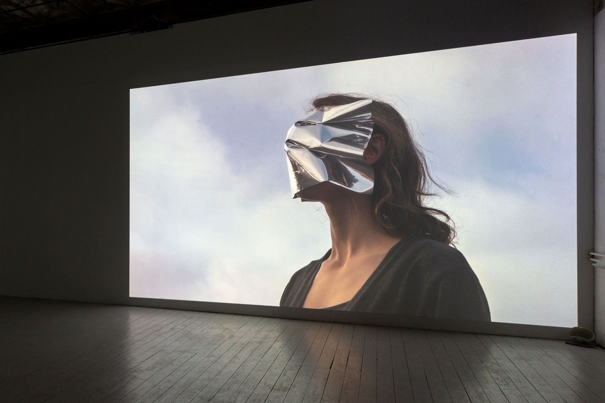
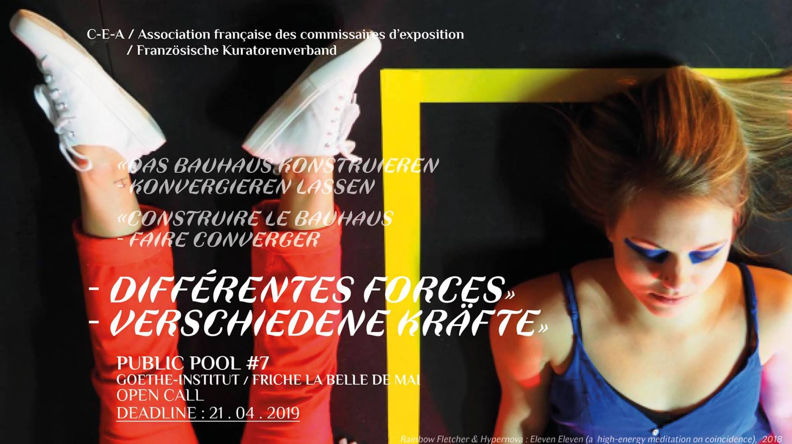

A visitor to UrbaneKünsteRuhr as a guest of SilentUniversityRuhr
De janvier 2021 à décembre 2021

The Screen Under My Eyelids
Exposition individuelle à Helmut, Leipzig
Vernissage le 28 février 2020
En montre jusqu'au 18 mars 2020
Helmut: helmut.space/en/art/
Facebook: Événement
Inside Out Project – Résidence à Regis-Breitingen
Performance le 12 octobre 2019, à 18h sur la Place du marché (Markplatz)
Présentation des travaux le 26 octobre 2019, 15h à Bahnhof. 19h à Modehaus. Artistes participants : Jessica Arseneau, Roswitha von den Driesch und Jens-Uwe Dyffort, Ingeborg Lockemann, Marike Schreiber, Hannah Sieben. Commissaire: Mandy Gehrt, Ina Luft, Constanze Müller
Exposition du 26 au 30 octobre 2019

Public POOL #7 DIFFÉRENTES FORCES – Verschiedene Kräfte
Performance à Friche la Belle de Mai, Marseille
1er juin 2019, 16h
Une proposition de Lydie Marchi et Constance Juliette Meffre pour CEA / Association française des commissaires d’exposition, avec Jean-Christophe Arcos, Anne-Valérie Gasc & Judith Lavagna
Intervenants : Aymar BATETANA CASANOVA , Arthur ESKENAZI, Bérangère ARMAND, Javiera TEJERINA, Sophie INNMANN, Anne BERGEAUD & Orane STALPERS, Léna FILLET, Inès KOUSSA GRADENIGO, Andrea GÜNTHER, Bingjie LUAN, Jessica ARSENEAU, Alexandre GERARD, Marie LIENHARD, Won Jin CHOI & Julia Martha MÜLLER.
Facebook: Public POOL
VAR13
Exposition de groupe à Westpol Airspace, Leipzig
Artistes participants : Jessica Arseneau, Leila Brinkmann, Marlene Franz, Felix Grabe, Friedrich Jacob Günther, Taemen Jung, Leonard Korbus, Lisa Kottkamp, Anna Raczynska, Snow, Malte Urban, Andrea Garcia Vasquez
Vernissage le 10 mai 2019, 18h
En montre du 10 au 18 Mai 2019
Westpol Airspace: facebook.com/Westpol.Air.Space
Facebook: VAR13 Ausstellung im Westpol
BeijosXXXX
Exposition collective à Agora Collective, Berlin
27 janvier 2019
Lichtspiel des Westen
Art dans l'espace publique, Karl-Heine-Straße, Leipzig
4 décembre 2018
Reading the Cities
Exposition dans l'espace publique pour le 25e anniversaire du jumelage Leipzig - Houston
Centre ville de Leipzig
En montre du 25 au 28 octobre 2018
DESTILLAT
Exposition collective dans le cadre du festival LINDENOW
Altes Kaufhaus West - ehem. HELD, Luetzner Straße
En montre du 5 au 7 octobre 2018
Événement Facebook : DESTILLAT | SONDERNAUSSTELLUNG
Metamorphosis. The Human Stories
Exposition d'art d'étudiant international en conjonction avec
International Association for the Study of Forced Migration (IASFM)
17 : Whither Refugees? Restrictionism, Crises and Precarity Writ Large
En montre du 24 au 27 Juillet 2018
University of Macedonia, Thessaloniki, Grèce
IT'S JUST A MATTER OF UTILITY
Exposition collective de 24 heures à Lindenauer Hafen, Leipzig
Artistes participants : Jessica Arseneau, Johanna Blank, Jens Dickemann, Hyunjung Han, Martin Haufe, Taemen Jung, Jakob Limmer, Lisa Kottkamp, Jihee Moon, Toni Mosebach, Andrea Garcia Vasquez, vonbrota, Kay Yoon, Kai-Hendrik Windeler
Début : 29 juin à 18 h
Fin : 30 juin à 18 h
Événement Facebook : IT'S JUST A MATTER OF UTILITY
Lichtenberg Studios, Berlin
Artiste en résidence
Mai 2018
Absurdism Film Event
Projections videos
Artistes participants : jessica arseneau, benedikt braun, minhye chu, the destroyer, elizabeth gerdeman, michael hahn, stefan hurtig, nicolas manenti, maeshelle west-davies, tattoonowsky
Commissaire : maeshelle west-davies
Vendredi le 9 mars, 2018
20h à 23h
À Helmut, Leipzig
Facebook: Absurdism Film Event
Artist talks: Michael Hahn & Jessica Arseneau
Organisé par LE SALON à DAS KAPiTAL, Berlin
8 mars 2018, 20h
Vernissage : 24 octobre, 17h
Exposition individuelle en collaboration avec Mandy Gehrt à Interim, Leipzig
Octobre le 6, 7 et 8
Vernissage : vendredi 19h
Ne pas manquer !
LECTURE : "The Last Book", samedi et dimanche 17h
Facebook LindenowExposition collective au Mémorial de la Division Allemande de Marienborn, Allemagne
21 mai au 30 juin 2017
Vernissage le 21 mai à 14:00.
FacebookArtistes participants : Jessica Arseneau, Fabian Bechtle, Sven Bergelt, Joachim Blank, Zaida Guerrero Casado, Jaeyong Choi, Fabia Fröhlich, Mandy Gehrt, Marlet Heckhoff, Frank Holbein, Christian Holze, Geeske Janßen, Bernadette Keating, Leonard Korbus und Christoph Görke, Elva Lai, Alexander Lorenz, Slavica Radic Lemac, Carsten Saeger, Soenke Thaden, Malte Urban, Rahel Zaugg
->Séance (2015)sera présenté dans le cadre des nouvelles acquisitions du Groupe Intervention Vidéo (GIV)
21 février 2017 à 19:30
Facebook-> Vernissage le 9 février 2017 à 18 h
-> Cover Extended, exposition de groupe de la Class for Installation and Spatial Art du 9 au 12 vévrier 2017. Commissaire: Bettina Allamoda
-> There Ain't No Moonlight After Midnight, 2017, performance le 9 février à 20 h